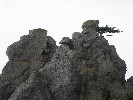
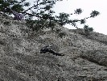
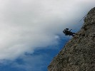

Jesenná lezecká obroda
2010 · Slovensko, Rakúsko
Jesenná lezecká obroda 2010
Aby som to úvodom zhrnul a opísal. Každoročne sa veľmi teším na jeseň a inak tomu nemohlo byť ani toho roku. Dokonca z lezeckej stránky bola pre mňa osobne plná očakávania. Prečo? Odpoveď je veľmi jednoduchá. Učil som sa po úraze v spoločnosti kamarátov nanovo liezť. A nanovo som si ozrejmil akú dôležitosť hrá v mojom živote slovko „kamarát“. Na mojom lezeckom pookriatí sa príkladne staral Jiríček alias Honzo, predseda Duško no a mierou najväčšou Ivuško Horárovie. Ten sledoval moje nerozvážne krôčiky od začiatku do konca a on musí sam povedať ako je so svojou prácou spokojný. Povedal som si, že budem spokojný, keď mi Horár ešte niekedy vyriekne svoje „dobra robota“. A po poslednej túre na Hohe Wande som to naozaj z jeho úst počul..
Vlastne by som už teraz mohol toto jesenné resumé skončiť, lebo týmto výrokom je povedané všetko. A aj sám za seba musím povedať, že som s jeseňou aj ja spokojný mierou vrchovatou. Ale po poriadku.
Ani neviem, ale vlastne viem prečo ma to už koncom leta strašne ťahalo na skalu, ale držal som sa ako tak na uzde, povedal som si, že začnem pomaly popoliezať až v zime, kedy je všetko mäkšie, sneh vyrovná prípadné nerovnosti. Figu drevennú. Proste som to už nevydržal a vyrazili sme s Horárom do rakúska na Peilstein. Tam to bolo optimálne kvoli krátkemu nástupu a množstvu lahších ciest na výber. Prve kroky boli nerozvážne, musel som sa prekúsať cez bolesti počas lezenia a potom aj doma, ale pomaly som prišiel na to ako vkladať svoju „šmatlavú“ ľavačku na stupy, zároveň ako si nebúchať dolámané kolená a kopu iných vychytávok, ktoré je ťažko opísať ale o to ľahšie zažiť..haha kecám. Nikomu neprajem. Dnes sa sám sebe čudujem ako som to mohol všetko absolvovať, koľko bolesti, nervozity že to nejde ako kedysi, mohol som si pohodlne užívať život invalida doma bez starostí. ALE NIE. Ja sa proste vždy musím trepať do tej tŕnistej cesty. Ale tu bola moja túžba dotknúť sa skaly, preciťovať expozíciu, započuť cinkot materiálu a hlavne byť opäť s kamarátmi asi milión krát väčšia ako všetko ostatné. Veď bolo to práve toto čo ma hnalo vpred aby som sa vrátil a uzdravil.. Bolo treba si sprvoti zvyknúť na všetko čo s lezením súvisí, ale chvala bohu všetky návyky zostali na starom mieste v hlave, rukách.., expozícia bez problémov..paráda.
Takže sa Horár so mnou mordoval niekoľko krát na Peilsteine, raz sme sa išli otestovať do Beckova, kde sme opáčili niečo z domoviny (teda hrudu, nie pálenku) napodiv sme celkom obstáli.





Potom nadišiel čas naŕknuť do Tatier. Zostava. Predseda, Horár a ja. Ešte mám pokračovať?
Pre zainteresovaných už asi moc netreba, ale dobre teda. Bol to pekný výlet, najmä pre chlapcov – tí si druhý deň vychutnali Vidlový hrebeň v krásnom počasí a poriadnej pohodičke, keď ešte stihli aj poslednú lanovku do Lomnice a nemuseli sa trmácať dole pešo..Ja som ich počúval dole nad Skalnatou dolinou v Lievikovom kotly, kde sa všetko ozývalo a nebolo núdza ani o ich povely. Tu mi robili spoločnosť radi sa fotiaci kamzíci, ktorým bolo úplne jedno či tam ležím alebo jódlujem, hlavne, že som im trávu nežral. Na večeru + pivo sme chodili do novoobjavenej krčmy – spokojnosť na oboch stranách, radi prídeme zase. V prvý deň sme sa trochu zamotali, hlavne lanovkári a vzhladom na málo času sme vybehli do Furkoty na Ostrú vežu, museli sme hladať niečo s krátkym nástupom kvoli mne. Tu som som si nadstavil zrkadlo ako vlastne na tom som. No lezecky som si docela veril, aj to šlo, ale nástup a zostup bol pre mňa katastrofálny. Aby som bol konkrétnejší – cesta bola tušim IV. Skala nič moc skôr ako mi povieme „na hovno“, samý loker, samý šmyklavý mach a lišajník, po druhej dĺžke som zlanil do žľabu, lebo času pribudlo a v trojici by sme sa dosť motali, možno aj po tme, čo som si ja nemohol dovoliť. Sám som sa potom prebíjal až na Štrbské, prišiel som akurát sa zotmelo. Potom som v leže čakal na chlapcov pred Fisom, až sa museli prísť meský policajti na mňa pozrieť či im tam nejaký pripitý spoluobčan nezamrzol. V momente, keď som už kosu nevydržal a vbehol do Fisu, objednal si čaj s horcom prišli dvaja medvedi Predseda s Horárom za mňou. Všade ma vyčmuchajú..
Potom chalani odišli domov a ja som zostal v Tatrách kontrolovať situáciu ešte dva dni...


Ďalší nezabudnuteľný výlet bol výlet s Candátom alias Jirkom alias Cabadajom opäť v Tatrách. Musím povedať, že všetko klaplo od začiatku do konca od počasia po pivo na Popradskom plese. Naše kroky viedli na Volovku. Opäť sme kvoli mne prispôsobili celé know how a išli sme hore na obed s tým, že na večer dáme na rozlezenie JZ hranu III, prespíme pod stenou a na druhý deň Štáflovku V. Aj tak bolo. Ale čo to? Katastrofa hned na úvod. Fištrón rozbil ploskačku pálenky hneď po príchode v Vyšnému žabiemu plesu!!!
Tichá domácnosť do večera. Nasratosť oboch nemala konca. Idúcky pod stenu hundral som si popod nos, čo to je vlastne za nezodpovedný živel ten vedľa mňa a ja sa chcem ešte aj s ním priviazať na lano! No, ale hore sme sa nejako dostali, dokonca sme našli aj zlaňák po tme a šťastlivo aj naše veci za úplnej tmy, lebo ani mesiac nesvietil. Večer bol bez pálenky ale zato s čajom..Zima nás zahnala do spacákov, ale to už vládla skutočná Tatranská pohodička, počítali tisíce hviezd na hlavou a dobre spali až do rána. Ráno som sa zobudil, až keď mi slnko spoza Českého štítu prvý krát svojimi lúčmi olízalo spacák. No a to bolo až o deviatej J). Alpinisti ako sa patrí!! Ale po výdatných raňajkách sme boli už aj o 11 pod stenou. Lezenie v Štaflovke bolo lahôdkové a všetko išlo ako po masle, krásna expozícia, dokonca sme dole zlanili – pre mňa vítaný bonus. Počasie sa ťažko ospevuje – na konci októbra v tričkách neni na zahodenie..Dole na Popradské sme došli ako ináč po tme, ale zato strašne smädní J. Nuž sme nestrácali čas a hneď sme zahájili pitný režim, lenže opäť chyba. V jedálni samí chlapi! Strašné niečo. Kam sa pozrieš okolo seba chlap. Alebo chlap – maďar. Žiadny oku lahodiaci pohľad alebo košatý rozhovor.Lebo šak tam bol nejaký zájazd z Budapešti alebo čo..čakal ich namáhavý prechod na Štrbské pleso. Nuž teda hovorím tomu živlu oproti mne: „poďme spať nemá to úroveň“. A on (Jirí), že „dobre“. Tak sme šli polosmädní spať, ale zato hladní..haha, ten do mňa v noci hučal ešte asi 2hodiny, kým pochopil, že spím a neodpovedám asi tak na stú otázku, ráno s čistou hlavou autom domov. Krásny výlet a znamenitý čajník!


Posledná akcia sa odohrávala na Hohe Wande. Zostava. Horár, Roman – prvé lanové družstvo, Predseda a ja – druhé lanové družstvo. Silná zostava, krásne počasie, pekné lezenie, výborné pivo, chladná hruškovica,chápajúci krčmár,orazený kozoroh, najmä ja osobne som mal velkú radosť z Romanovej prítomnosti, snáď sa mu páčilo, hlavne predsedove nedostižné lýtka! Ale vraj bude chodiť s nami častejšie, lebo my sme takí fasa chalani!


Z môjho pohľadu mimoriadne vydarená jeseň, len škoda, že november už až tak neprial. Teším sa na zimu, nad ktorou visí u mňa otáznik. Ale veď o to väčšia zábava ma čaká..
Jesennému premrznutému horcu ZDAR!
Ivík môj.
Pôvodná stránka: archív horecsport.sk